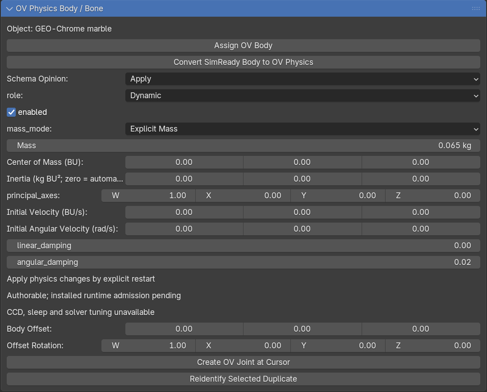
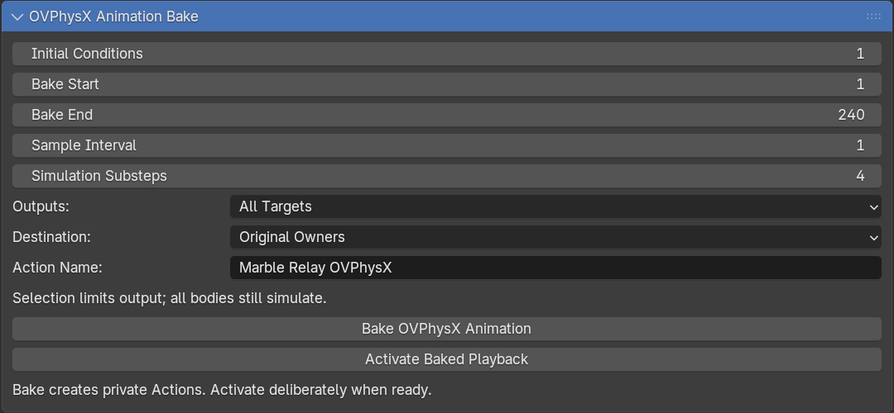
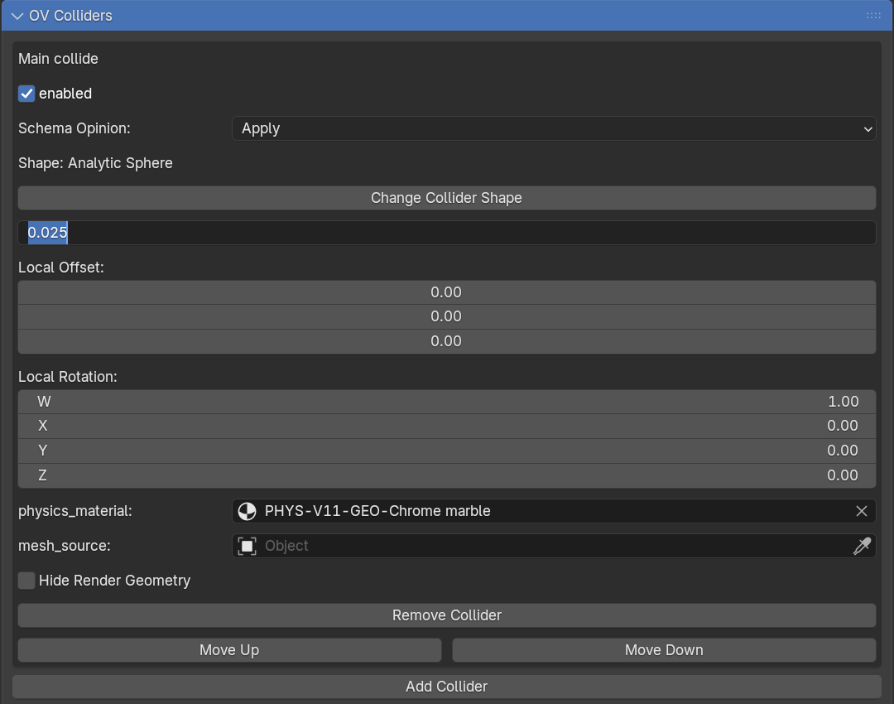
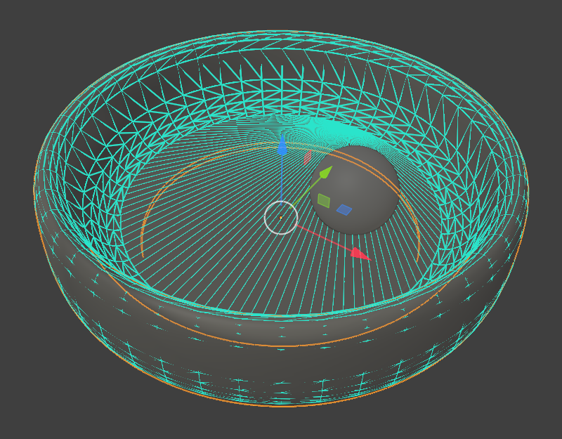
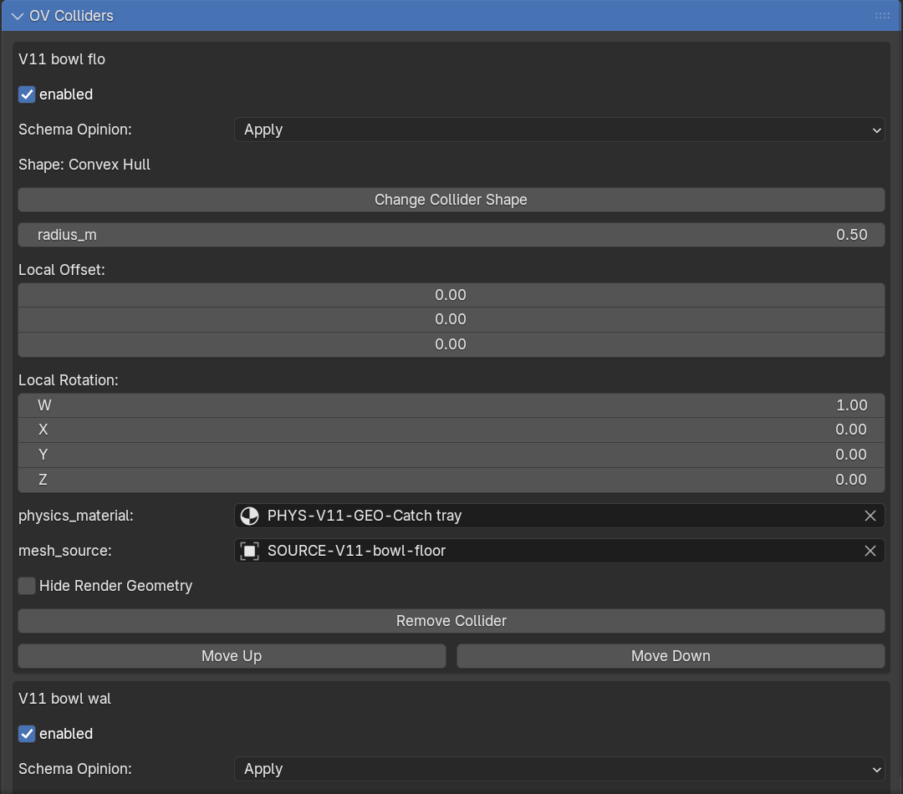
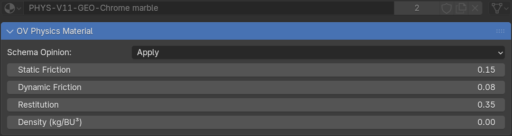
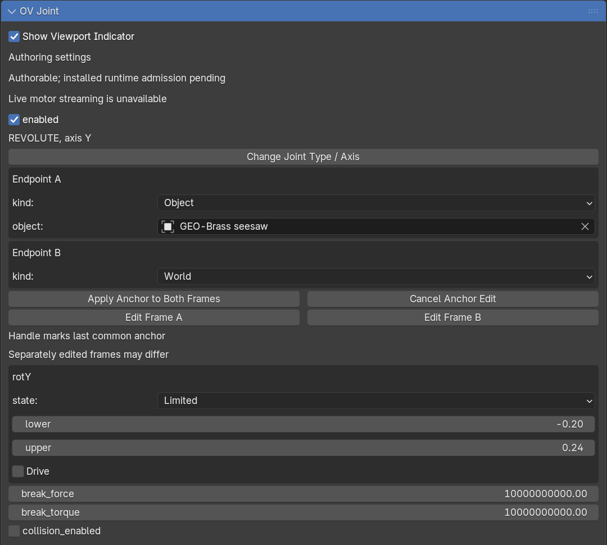

Add physics and bake animation
Start with a cube falling onto a floor. Then try other collision shapes, adjust friction and bounce, or connect objects with joints.
Use the add-on's OV panels, not Blender's standard Rigid Body controls. Install the add-on first. Physics uses the CPU by default; ovrtx rendering uses the GPU.
Find the controls
The Properties editor is usually on the right side of Blender. Select an object, then open the relevant tab. You can also search for a panel by name.
| Task | Panel |
|---|---|
| Set how an object moves and its mass | Physics → OV Physics Body / Bone |
| Choose its collision shape | Physics → OV Colliders |
| Set friction and bounce | Material → OV Physics Material |
| Set gravity and show collision shapes | Scene → OV Physics Scene |
| Save simulated motion as animation | Scene → ovphysx Animation Bake |
| Connect two objects | Physics → OV Joint, with a joint selected |
Make a falling cube
Use a new scene with Blender's default units. Save it before adding physics.
1. Make the prop and floor
- Rename the default cube Drop Cube and move it to Z = 3.
- Add another cube and rename it Floor.
- Press N in the viewport to open the sidebar. Under Item, set the floor's Dimensions to 10 × 10 × 0.2 and its Z Location to −0.1.
- Select each object and choose Object → Apply → Scale. Its scale should read 1, 1, 1.
- Set the Timeline to frames 1–120. Keep the camera and light for rendering later.
2. Add bodies and colliders
A body controls how an object moves. A collider is the shape used to detect contact.
- Select Drop Cube. Open Physics Properties → OV Physics Body / Bone and click Assign OV Body.
- Set role to Dynamic, keep enabled checked, and set Mass to 1 kg.
- Open OV Colliders. The body already has a Convex Hull collider; keep it for this cube.
- Select Floor, click Assign OV Body, and choose Static. Keep its default collider too.
| Body role | Behavior |
|---|---|
| Dynamic | Moves in response to gravity and collisions. |
| Static | Stays fixed, like a floor or wall. |
| Kinematic | Follows your animation and can push other objects. |


3. Set gravity and check the shapes
- Open Scene Properties → OV Physics Scene and click Apply Scene.
- Set Gravity Direction to (0, 0, −1) and Gravity Magnitude to 9.81.
- Enable Physics Indicators and Collider Wires. Keep Show Overlays enabled in the viewport.
- Check that the cube's collider starts above the floor without overlapping it.
If Selected Only is enabled, select an object to see its collider. Hiding the wires changes their display, not whether the objects collide.
4. Preview and reset
- In Render Properties, choose
ovrtxExample and switch the viewport to Rendered shading. - Return to frame 1 and play the Timeline. The cube should fall onto the floor.
- Stop playback and return to frame 1 to reset.
- After changing physics settings, restart playback from frame 1 to apply them.
Stop and reset before editing physics. To scrub saved motion backward and forward, bake the animation first.
Bake and render the motion
Baking saves the simulation as animation keys you can play, edit and render.
- Stop playback. Open Scene Properties → ovphysx Animation Bake.
- For the cube exercise, set Initial Conditions = 1, Bake Start = 1, Bake End = 120 and Sample Interval = 1. Leave simulation substeps at their default.
- Choose Outputs → All Targets and Destination → Original Owners.
- Click Bake ovphysx Animation and wait for completion. Esc cancels. Avoid saving, undoing or switching scenes while the bake runs.
- Click Activate Baked Playback, then play or scrub the Timeline.
- Save the
.blendfile. You can edit the keys in Dope Sheet → Action Editor. - Set up a camera and follow Render an animation.


Use Restore Previous Animation before baking again or returning to live physics. Baked motion can play without the physics runtime; ovrtx rendering still needs its runtime.
Bake selected objects or use an existing rig
Selected Targets saves keys only for selected objects, but all bodies still participate in the simulation. If existing constraints, drivers or animation conflict with the bake, use Explicit Clean Outputs to map the motion to separate objects or bones. This copies transforms; it does not automatically retarget an IK rig.
Choose a collision shape
Stop and reset the simulation, then open OV Colliders → Change Collider Shape.
| Shape | Use it for |
|---|---|
| Box | Blocks, floors and simple rectangular objects. |
| Sphere | Balls and other round objects. Set the radius in meters. |
| Capsule | Rounded cylinders. The cylinder runs along local Z; its height excludes the rounded ends. |
| Convex Hull | A solid outer envelope around a mesh. It cannot preserve holes or inward curves. |
Check the size and position of the collider after changing its shape. Use local offsets and rotations to align it with the object.


Hollow or complex objects
For a bowl or another hollow object, use several convex pieces for the floor and walls. A single convex hull would fill the opening. Add Collider lets you combine multiple collision shapes on one body; this is called a compound collider.


Set up multiple colliders


Check each collider's Enabled setting. Hide Render Geometry hides its visible mesh without turning off collisions.
Adjust friction and bounce
- Stop and reset the simulation. Select an object with an active Blender material.
- Open Material Properties → OV Physics Material and set Schema Opinion → Apply.
- Adjust the contact settings below.
- In OV Colliders, assign that material to the collider's physics_material field.
- Restart from frame 1 and compare the motion.
| Setting | Effect |
|---|---|
| Static Friction | Resistance to starting a slide. |
| Dynamic Friction | Resistance while sliding. |
| Restitution | Bounce: lower values reduce it; higher values increase it. |


Assign the physics material to the collider even if the object already uses it for rendering. In OV Physics Body / Bone, linear_damping slows movement and angular_damping slows rotation. Lower damping lets motion continue longer.
Add a joint or a bone body
A joint connects bodies and limits how they move. A Revolute joint acts like a hinge.
- Give an object a body and collider. Place the 3D Cursor at the hinge location.
- Select that body and click Create OV Joint at Cursor.
- Select the new joint object and open Physics Properties → OV Joint.
- Use Change Joint Type / Axis to choose Revolute and the rotation axis.
- If you move the joint, click Apply Anchor to Both Frames before previewing or baking.
- Restart from frame 1. Add rotation limits after the hinge moves correctly.


To connect two bodies, select both before creating the joint. The active object becomes Endpoint A. Other joint types include Fixed, Prismatic (sliding) and D6 (configurable movement and rotation).
Use a bone instead of an object
Select an armature, enter Pose Mode, select a bone, and use OV Physics Body / Bone. Add its collider explicitly. For a joint endpoint, choose the armature and bone, then use Bind Selected Bone Name. Resolve conflicting animation, constraints or drivers before running physics. Use local, editable objects and armatures.
CPU physics is the default for this workflow. GPU joints are limited to world attachments with unrotated local joint frames. Live motor-target changes, acceleration drives, cloth, fluids and deformable bodies are unsupported. Animated bone transforms can drive Blender's skin deformation, but ovrtx skinned rendering is unsupported.
Units
| Field | Unit |
|---|---|
| Mass | Kilograms |
| Density | Kilograms per cubic Blender unit |
| Body/collider offsets and Box Dimensions | Blender units |
| Sphere/capsule radius and capsule cylinder height | Meters, even in a centimeter scene |
| Initial linear/angular velocity | Blender units per second / radians per second |
| Gravity magnitude | Meters per second squared |
Leave all diagonal_inertia values at zero to calculate inertia automatically.
Bring an existing SimReady prop
Select the mesh, stop and reset physics, then choose Physics Properties → OV Physics Body / Bone → Convert SimReady Body to OV Physics. After conversion, edit the object's physics in the OV panels.
Some collider layouts cannot be converted. Read the error if conversion fails. Blender constraints are not automatically converted into OV joints.
Troubleshooting
| Problem | What to check |
|---|---|
| Object does not fall | Use Dynamic, enable the body and collider, apply gravity, and restart from frame 1. |
| Object falls through the floor | Give the floor a Static body and collider. Check collider size and placement. |
| Physics controls are disabled | Stop and reset playback. Use Restore Previous Animation if a bake is active. |
| Motion looks wrong | Show collider wires and check overlap, scale, friction and damping. |
| Bake fails | Apply pending joint anchors and resolve conflicting animation or output mappings. |
| Simulation reports an unsupported setting | Read the first error in the panel and check the platform and device limits. |